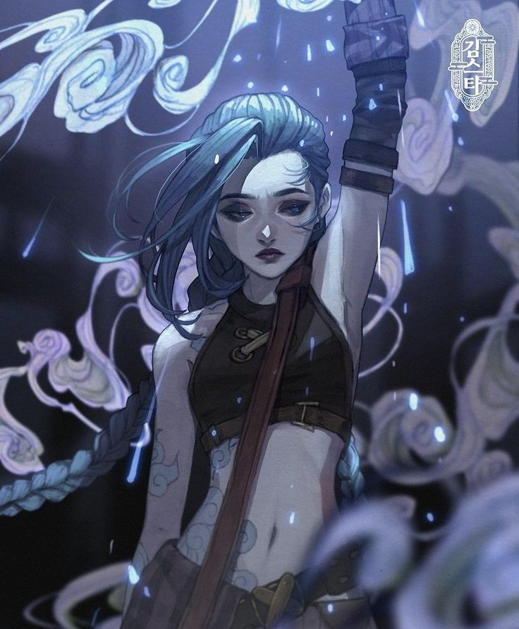
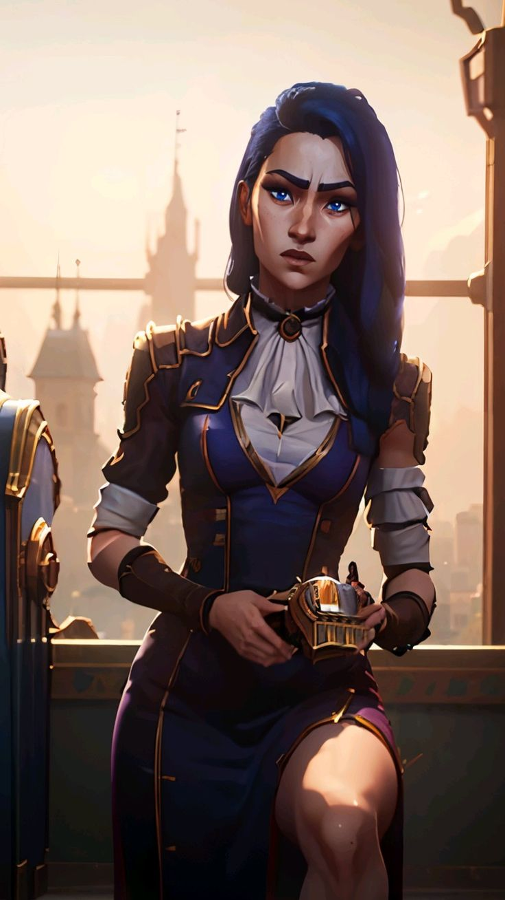
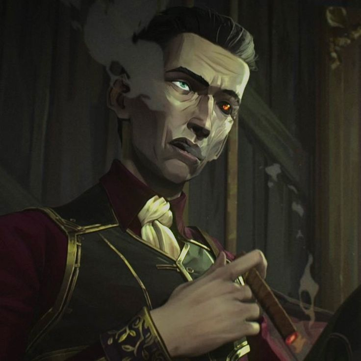
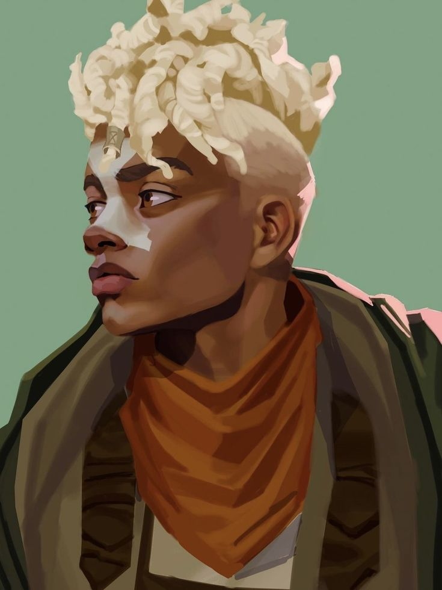
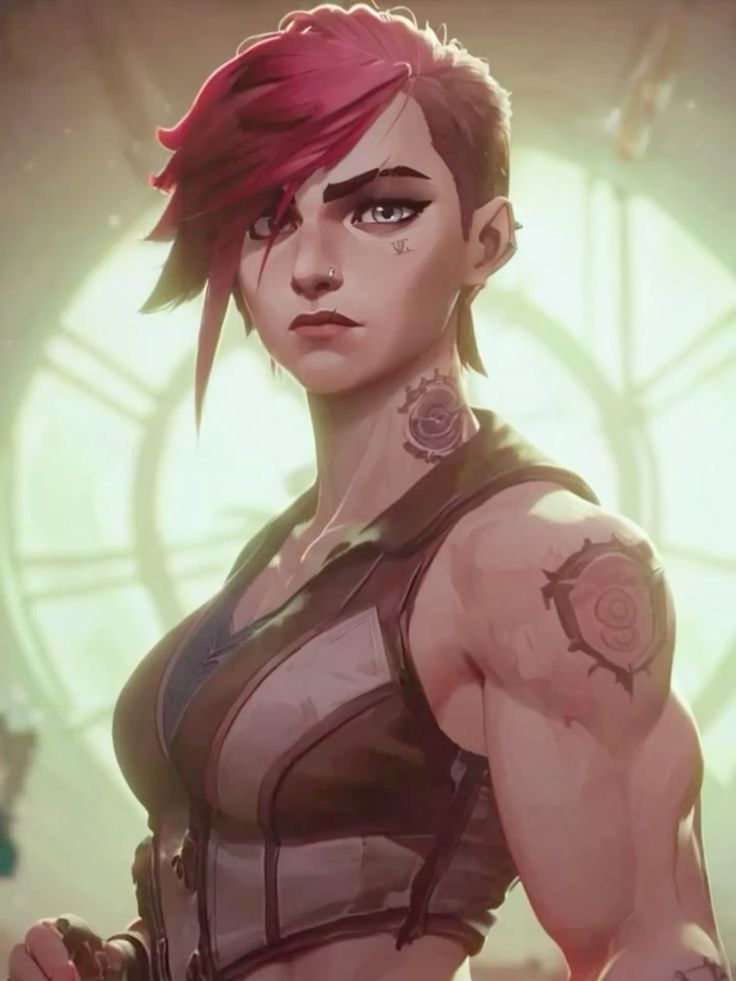

| Image | Name | Information |
|---|---|---|
|  |
Jinx
|
Jinx, born as Powder, is a notorious Zaun Crest icon Zaunite criminal and Vi's younger sister. When she was a little girl, her parents were killed in a failed uprising against Piltover Crest, leading Vander, the unspoken leader of the undercity, to adopt both her and Vi as his own daughters. After a series of events forced Jinx and her sister apart in more ways than one, she was fundamentally and irrevocably changed, transforming her into the demented killer she is today. |
|  |
Caitlyn
|
Renowned as its finest peacekeeper,Caitlyn is also Piltover’s best shot at ridding the city of its elusive criminal elements. She is often paired with Vi, acting as a cool counterpoint to her partner’s more impetuous nature. Even though she carries a one-of-a-kind hextech rifle, Caitlyn’s most powerful weapon is her superior intellect, allowing her to lay elaborate traps for any lawbreakers foolish enough to operate in the City of Progress. |
|  |
Silco
|
Silco was a Zaun Zaunite criminal and revolutionary, and the adoptive father of Jinx. He sought to free the undercity from Piltover's control and was willing to resort to brutal and inhumane methods to achieve his dream. |
|  |
Ekko
|
A prodigy from the rough streets of Zaun,Ekko manipulates time to twist any situation to his advantage. Using his own invention, the Z-Drive, he explores the branching possibilities of reality to craft the perfect moment. Though he revels in this freedom, when there’s a threat to his friends, he’ll do anything to defend them. To outsiders, Ekko seems to achieve the impossible the first time, every time. |
|  |
Vi
|
Once a criminal from the mean streets of Zaun, Vi is a hotheaded, impulsive, and fearsome woman with only a very loose respect for authority figures. Growing up all but alone, Vi developed finely honed survival instincts as well as a wickedly abrasive sense of humor. Now working with the Wardens to keep the peace in Piltover, she wields mighty hextech gauntlets that can punch through walls—and suspects—with equal ease. |
https;//ph.pinterest.com/pin/7248049394795592/ https://ph.pinterest.com/pin/74590937572066721/ https://ph.pinterest.com/pin/1266706140148586/ https://ph.pinterest.com/pin/4292562138155682/ All information is taken from: https://leagueoflegends.fandom.com/wiki/Category:Characters